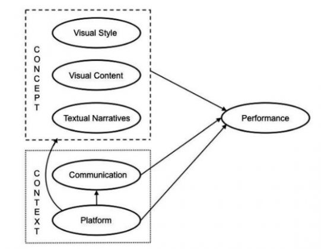
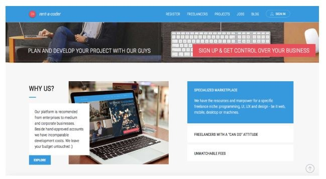
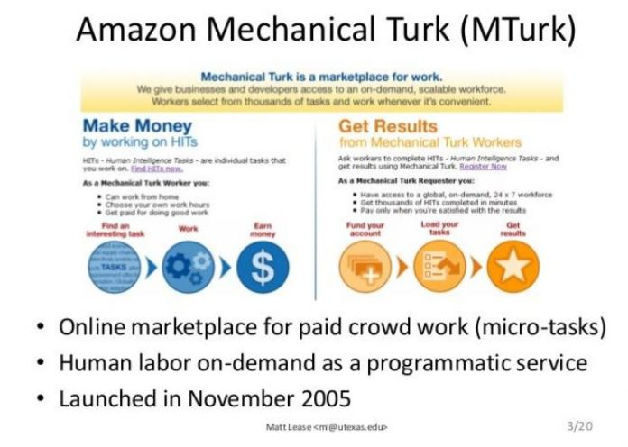
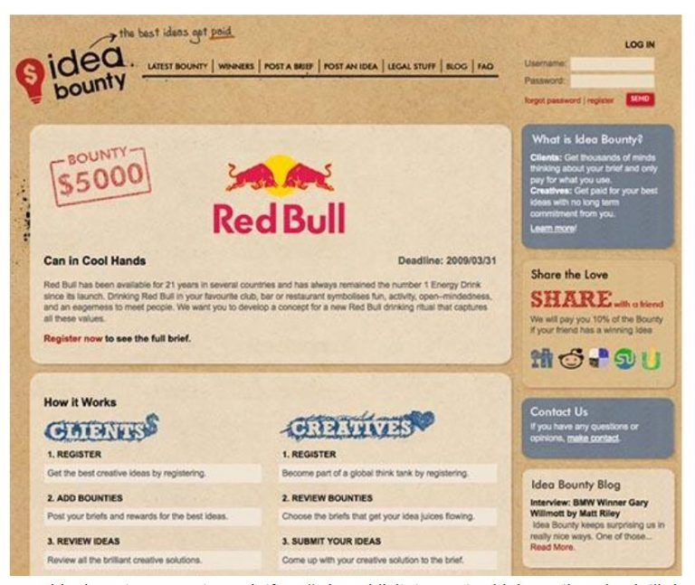
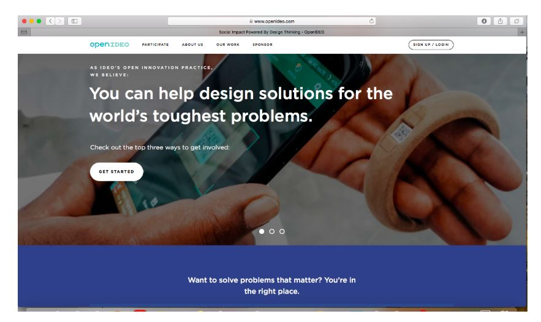
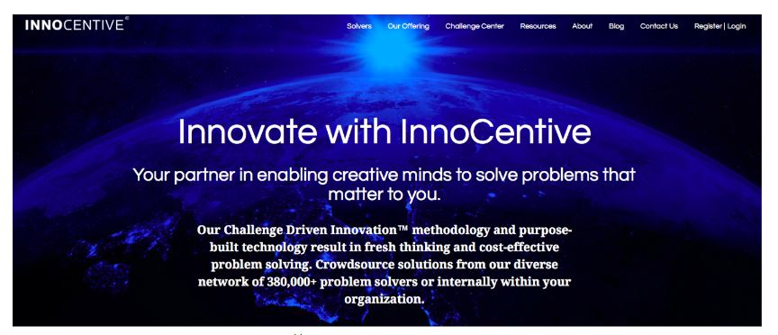

Deși folosit încă din secolul trecut, crowdsourcing-ul a fost pentru prima oară astfel denumit în 2006 (Howe & Robinson, 2006), anume “Crowdsourcing este actul de a prelua o anumită activitate realizată în mod tradițional de un anumit agent desemnat (de obicei un angajat) și externalizarea acesteia către un grup nedefinit de persoane, în general mare, sub forma unui apel deschis de participare.”

Pornind initial de la compania Threadless, creatoare de tricouri pe baza cererii de la clienți, folosind imprimeuri artistice propuse tot de clienți, Daren Brabham este primul cercetător care documentează științific termenul și, putem spune, fenomenul care a devenit în present crowdsourcingul. Cartea apărută în 2013 la MIT (Brabham, 2013) trece în revistă principalele studii, teorii, platforme, argumente pro și contra crowdsourcing-ului. Brabham definește crowdsourcing-ul ca pe un model online, de rezolvare distribuită a problemlor și de producție, model care utilizează inteligența colectivă a comunităților online.
Într-un articol recent (Guth & Brabham, 2017), autorii pornesc de la premiza că mulțimea și comunicarea sunt legate, dar pe măsură ce societatea conectată în rețea evoluează, diferitele relații dintre ele necesită explorarea în continuare de către oamenii de știință din domeniul comunicațiilor. Ideile care se ridică la suprafață pe platformele de crowdsourcing se presupune că reușesc deoarece sunt percepute a fi cele mai bune idei, însă întrebările legate de factorii care influențează performanța unei soluții față de alta rămân încă destul de puțin explorați și de aceea lucrarea examaminează un nou asemenea model. Modelul propus – ilustrat în imaginea schematic de mai jos – vine ca o explicație a elementelor care afectează performanța în crowdsourcing pentru soluții de ideație creativă. Folosind analiza conținutului și regresia multiplă ierarhică, studiul a examinat relația dintre performanța într-o competiție a publicului în domeniul crowdsourcing și (a) conceptele de proiectare, (b) comunicarea despre aceste proicte și (c) contextul platformei. Rezultatele arată că crowdourcing-ul nu este întotdeauna un proces meritocratic pentru a produce ideile “cele mai bune” obiective, ci mai degrabă depinde de factorii subiectivi comunicativi, temporali și de platformă.

Accepțiunea actuală cea mai general (Afuah & Tucci, 2012) consideră crowdsourcing-ul ca pe un act de externalizare a unei sarcini către o “mulțime”, mai degrabă decât către un agent desemnat (o organizație, o echipă informală sau formală sau un individ), cum ar fi un antreprenor, sub forma unui apel deschis; o formă de IT este întotdeauna utilizată pentru a crea și a accesa mulțimea de oameni, considerându-se că crowdsourcing-ul include trei tehnici separate, dar stabile: crowdsourcing bazat pe competiție, crowdsourcing bazat pe piața de muncă virtuaă, și crowdsourcing bazat pe colaborare deschisă. În crowdsourcing-ul bazat pe competiție fiecare agent din mulțime se auto-selectează pentru a-și rezolva singură problema și cea mai bună soluție este alegerea soluției câștigătoare. De exemplu, mai degrabă decât să-și dezvolte un algoritm intern pentru a-și perfecționa în continuare sistemul de recomandări de filme sau pentru a contracta dezvoltarea cu un antreprenor desemnat, Netflix a externalizat sarcina către mulțime, sub forma unui apel deschis către lume. În crowdsourcing-ul bazat pe colaborare membrii auto-selectați ai grupului “gândesc” (lucrează împreună) problema pentru a o rezolva, iar rezultatul este o singură solute, din partea multimii. De exemplu, atunci când Facebook a hotărât să traducă conținutul de pe web din engleză în diferite limbi, a apelat la mulțime și traducerea spre franceză și spaniolă s-a finalizat în mai puțin de două săptămâni.
Dintre primele manifestări ale crowdsourcing-ului, chiar dacă nu era denumit în această formă, menționăm:
- Premiul pentru Longitudine (1714): încercând să determine o modalitate de măsurare a poziției longitudinale a unei nave, guvernul britanic a oferit publicului un premiu în bani pentru cea mai bună soluție
- Premiul pentru descompunerea alcalinelor (1783): Regele Ludovic al XVI-lea a oferit un premiu persoanei care ar putea “obține alcaline” prin descompunerea sării marine, prin metoda cea mai simplă și cea mai economică
- Publicarea Dicționarului Oxford Englez (1884): 800 de voluntari au catalogat cuvinte pentru a crea prima fasciculă a dicționarului britanic.
- Concursul Planters Peanuts (1916): Logo-ul Mr. Peanut a fost creat de un băiat de 14 ani care a câștigat concursul de logo-uri al companiei Planter Peanuts.
- Concursul de design pentru Opera din Sydney (1957)
- Bursa de la Hollywood (1996) permite cumpărarea și vânzarea de acțiuni
- SETI (1999) a fost lansat de Universitatea din California, Berkeley – un serviciu prin care voluntarii puteau contribui la căutarea semnalelor care ar putea proveni din inteligența extraterestră prin instalarea unui program care utilizează timpul liber al calculatorului pentru analizarea secvențelor de date înregistrate de telescoapele radio implicate în programul SERENDIP.

- JustGiving (2000) – platformă online care permite publicului să ajute la strângerea de bani pentru organizații de caritate.
- UNV Online (2000) – serviciu online de voluntariat care permite onectarea persoanelor care își dedică timpul și abilitățile pe Internet pentru a ajuta
 organizațiile să facă față provocărilor legate de dezvoltare
organizațiile să facă față provocărilor legate de dezvoltare - iStockPhoto (2000): site-ul cu imagini gratuite permite publicului să contribuie și să primească comisioane pentru contribuțiile lor.
- Wikipedia (2001): enciclopedia gratuită a internetului, deszotată de mulîime pentru mulțime
- Topcoder (2001) – companie de dezvoltare software de tip crowdsourcing.
- Rent-A-Coder

- Amazon Mechanical Turk

Exemplele pot continua întrucât în present crowdsourcing-ul ete folosit pe scară largă în foarte multe domenii. Vom reveni cu alte informații în secțiunile următoare.
Din perspectiva manierei în care lucrează mulțimea (Doan et al., 2012), crowdsourcing-ul este fie explicit, fie implicit. Crowdsourcing-ul explicit permite mulțimii să colaboreze pentru a evalua, a împărți și a construi diferite sarcini specific. Prin crowdsourcing explicit utilizatorii pot evalua anumite elemente cum ar fi cărți sau pagini web sau pot distribui articole prin postarea produselor sau articolelor. Utilizatorii pot construi, de asemenea, artefacte prin furnizarea de informații și editarea muncii altor persoane. În crowdsourcing-ul implicit mulțimea rezolvă o problemă ca efect secundar al altui lucru pe care îl fac. Crowdsourcing-ul implicit poate lua două forme: independentă și purtător de cuvânt: cel independent permite mulțimii să rezolve problemele ca efect secundar al sarcinii pe care o face de fapt, în timp ce în forma de purtător de cuvânt informația pentru mulțime este captată de pe un site terț pentru a aduna informații.
Din perspectiva tipologiei problemelor care pot fi abordate prin crowdsourcing se disting patru mari categorii de probleme (Brabham, 2013), și anume:
- Descoperirea și gestionarea cunoștințelor sunt utilizate pentru problemele de gestionare a informațiilor în care o organizație mobilizează o mulțime pentru a găsi și a asambla informații. Este ideal pentru crearea de resurse colective.
- Serviciile de informații inteligente distribuite sunt folosite pentru problemele de gestionare a informațiilor în care o organizație are un set de informații la îndemână și mobilizează o mulțime pentru a procesa sau analiza informațiile. Este ideal pentru procesările seturilor mari de date pe care nici computerele nu le pot face cu ușurință.
- Căutarea în spectru larg este utilizată pentru problemele de ideație în care o organizație mobilizează o mulțime pentru a găsi o soluție la o problemă care are un răspuns corect și obiectiv. Este ideală pentru rezolvarea problemelor științifice.
- Producția creative bazată pe recenzare este utilizată pentru acele probleme de ideație, în care o organizație mobilizează o mulțime pentru a găsi o soluție la o problemă care are un răspuns subiectiv sau dependent de sprijinul public. Este ideală pentru probleme de design, estetice sau de politică.
În continuare, pe baza unei recenzii din 2016, trecem în revistă principalele platforme de crowdsourcing.
Platforme de dezvoltare a ideilor
Ideea Bounty

www.ideabounty.com este o platformă de publicitate pentru idei creative și soluții de marketing cu mii de persoane înregistrate pentru a participa cu idei, gata să preia informatiile clienților. Mărcile oferă cele mai provocatoare lucrări către o comunitate de generatori de idei creative, pentru o recompensă specificată. Cea mai bună idee este plătită. Idea Bounty se diferențiază de alte platforme similar prin aceea că solicit doar idei și nu termină sau finalizează lucrările, ca răspuns la solicitările trimise de clienți. Idea Bounty are mai mult de 20.000 de membri ai comunității înregistrate și a lucrat cu branduri, printre care The World Wildlife Fund, Unilever, Chevrolet, The Financial Times și South African Breweries..
OpenIDEO

OpenIdeo este o platformă concepută pentru a ajuta ideile să crească: se. pot crea discuții, se poate obține ajutor în ideile de proiect și se poate oferi ajutor pentru alții. Este orientată mai mult către “idei mai bune”, proiecte filantropice.
InnoCentive

Aceasta este o altă platformă de “rezolvare a problemelor”, pentru a conecta solicitanții de soluții și grupurile de reflecție colective sau individuale. “Rezolvarea provocărilor” provine de la multe organizații, inclusiv întreprinderi, instituții academice și grupuri nonprofit. InnoCentive câștigă participanții și reputația și lucrează cu peste 13 milioane de freelanceri.
Din perspectiva designului graphic sau de produs următoarele sunt printer cele mai bune platforma de crowdsourcing:
CrowdSpring vă permite să găsiți designeri pentru proiecte pentru doar 7 dolari. Scrieți ceea ce doriți și obțineți observații de la persoanele care lucrează pe platformă. Tot ce trebuie să faceți este să alegeți preferatul dvs. și veți plăti numai pentru acesta. Este un instrument excelent, în special, dacă nu sunteți încrezător în designul de produs pe care îl aveți deja, pentru a veni cu idei noi.
99Designs este o platformă artistică, mai degrabă axată pe designul grafic decât pe designul produsului (marcă, logo, site web, ambalare …). Creați o scurtă prezentare a proiectului pe platformă, alegeți unul dintre cele 4 pachete pe care platforma le oferă și apoi proiectul dvs. este transformat într-un concurs între mai mult de 1 milion de profesioniști. Alegeți câștigătorul și acesta câștigă premiul. Puteți oferi feedback cu privire la designul pe care l-ați ales: revizuirile nelimitate fac parte din fiecare plan.
Cad Crowd – este o platformă de interes dacă sunteți în căutarea de soluții pentru proiectare 3D și idei de imprimare 3D: acesta funcționează cu un sistem similar ca cu cele două anterioare, dar se concentrează pe modelatori CAD (Computer Aided Design). Puteți conduce un concurs dar puteți alege să angajați câștigătorul într-un mod mai tradițional (de exemplu prinplata cu ora).
DesignCrowd – prin aceatsă platformă puteți găsi designeri cu diverse filtre, cum ar fi de specialitate (blog, pagina de Facebook, Twitter Pagina, Banner Ad, Revista, pagina de destinație …), țară, câștigurile, procentul de locuri de muncă acordate, etc. Statisticile și performanțele designerilor sunt, de asemenea, evaluate iar costul lor crește odataă cu calitatea acestora.
Avantaje și dezavantaje ale crowdsourcing-ului
Unul dintre avantajele cheie ale crowdsourcing-ului este că un număr mare de lucrători sunt disponibili pentru a-și îndeplini sarcinile individuale. Acest lucru înseamnă că este posibil ca mulțimea să înceapă să lucreze la sarcinile date aproape imediat. De asemenea, este posibil să aveți rapid un număr mare de sarcini, crowdsourcing-ul oferind o modalitate excelentă de a gestiona perioade de activitate foarte intense, fără a trebui să se angajeze oameni cu normă întreagă pentru a face față acestei încărcări de vârf. Prin urmare, se reduce necesitatea de a angaja o echipă care fie se află în așteptare atunci când nu este necesară, fie este deconectată de la alte activități atunci când este o perioadă de muncă intensă. Deoarece platformele de crowdsourcing solicită participanți din întreaga lume, acestea oferă astfel și o bună acoperire, practice permanentă, a partcipanților. Pe scurt, mulțimea care poate fi solicitată prin crowdsourcing este imediat disponibilă la cerere, scalabilă.
Cea mai mare problemă cu folosirea crowdsourcing-ului este obținerea rezultatelor corecte pentru sarcina dvs. Sarcinile simple care pot fi terminate rapid pot fi completate corect. Dar sarcini mai complicate, care necesită o înțelegere mai bună a cerințelor, mai multe abilități analitice și mai mult efort – pe scurt, sarcinile care sunt mai grele – vor avea un risc mai mare de a fi finalizate eronat. Chiar și participantii la crowdsourcing care sunt bine instruiți sunt numai oameni și pot face greșeli. Acest lucru este problematic cu crowdsourcing-ul, deoarece, în general, motivul principal pentru folosirea mulțimii este că sarcina de executat este dificil de automatizat, dar ușor de completat de un om. Aceasta înseamnă că este dificilă diferențierea dintre răspunsurile corecte și greșite. O altă sursă de erori în ceea ce privește rezultatele sunt partiicpanții care se angajează cu intenția de fraudă și nu au intenția de a încerca să-și îndeplinească sarcinile cu bună-credință.
Concluzionăm scurt: desi este și va fi folosit în din ce în ce mai multe domenii de activitate (realitate virtuală, Big Data, economia de piață, robotică, asistenți personali etc.), există încă unele limitări în cea ce privește tipulrile de activități care pot fi făcute folosind crowdsourcing. Prin urmare, domeniul este foarte active și atractiv, stârnind interesul multor cercetări.
Referințe
- Allan Afuah and Christopher L. Tucci (2012). Crowdsourcing as a Solution to Distant Search. Academy of Management Review. 37 (3): 355–375. doi:10.5465/amr.2010.0146.
- Daren Brabham (2013). Crowdsourcing, MIT Press.
- Anhai Doan, Raghu Ramakrishnan, Alon Y. Halevy (2012). Crowdsourcing Systems on the World-Wide Web. Communications of the ACM, Vol. 54 No. 4, Pages 86-96
- 10.1145/1924421.1924442
- Kristen L. Guth & Daren C. Brabham (2017): Finding the diamond in the rough: Exploring communication and platform in crowdsourcing performance, Communication Monographs, DOI: 10.1080/03637751.2017.1359748, 24 pp.
- Jeff Howe and Mark Robinson (2006). The Rise of Crowdsourcing. Wired. Ideas. http://www.wired.com/wired/archive/14.06/crowds.html